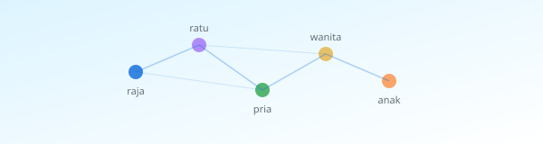
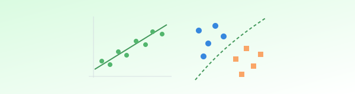
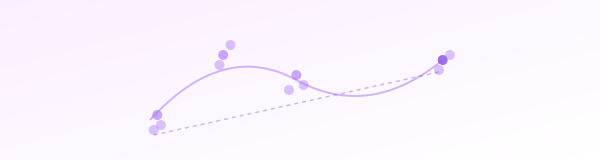

Visualisasi interaktif untuk mata kuliah CS & AI
Konsep AI dibongkar dan dijelaskan tuntas, dalam Bahasa Indonesia
KupasAI adalah platform pembelajaran yang membongkar konsep Artificial Intelligence dan Data Science menjadi visualisasi yang benar-benar interaktif. Bukan sekadar menampilkan gambar diam atau video, melainkan visualisasi yang bisa digeser, diatur, dan dieksplorasi secara langsung.
Setiap visualisasi dirancang untuk mata kuliah spesifik, mengikuti Rencana Pembelajaran Semester (RPS), dan sepenuhnya dalam Bahasa Indonesia.

Word embeddings, recurrent neural networks, LSTM, Transformer, text classification, named entity recognition, summarization, question answering.
Lihat visualisasi →
Visualisasi linear regression, gradient descent, decision trees, dan konsep dasar machine learning.
Deep learning, CNN, RNN, optimasi, dan arsitektur neural network lanjutan.

Fuzzy logic, genetic algorithms, swarm intelligence, dan sistem cerdas.